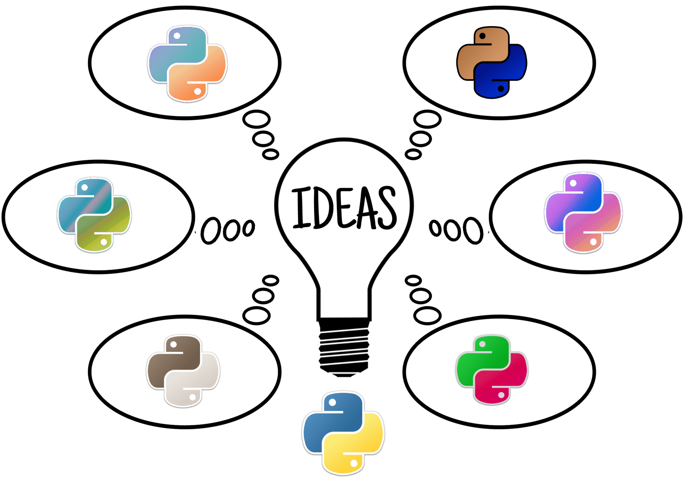

Ideas: making it easier to extend Python’s syntax
Warning
As of August 18 2026, I’ve started updating this project after a 4 year-long hiatus. The version that can be installed via pypi (using pip) has not been updated yet.
{kind=link}

You have an Excellent Idea ® to change the Python syntax and want to find a way to include your Excellent Idea ® in your Python programs. According to Python Developers Guide, this might be doable if you are willing to follow “a few steps” including:
Get a copy of the CPython’s code repository and all the required compilers for your platform.
Modify the grammar file to add rules for the new syntax.
Modify the AST generation code; this requires a knowledge of C
Compile the AST into bytecode
Recompile the modified Python interpreter
This … can be a rather daunting task. It might get a bit easier if you grab a copy of the currently unpublished book by Anthony Shaw, CPython Internals and read it from cover to cover, but it will still remain a major task. Furthermore, it would not be easy to share your work with others so that they can try it out.
However, there is a simpler way: it is possible to run code with a modified syntax using import hooks. [1]
Quick links to topics
Many examples
- Guide to the many examples included
- Source transformations
- AST transformations
- AST creation
- Bytecode transformations
- More complex examples
- Tranforming a module after creation
- Custom encoding
To do
Todo
Try to create a different module object.
(The original entry is located in C:\Users\Andre\github\ideas\docs\source\examples\constants.rst, line 123.)
Todo
Write this up.
(The original entry is located in C:\Users\Andre\github\ideas\docs\source\examples\patching.rst, line 4.)
Todo
Write an example where we include different locations to search.
(The original entry is located in C:\Users\Andre\github\ideas\docs\source\possible.rst, line 49.)